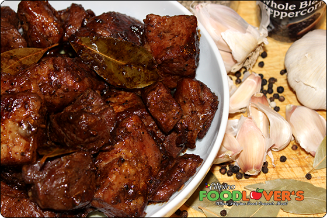

Description
It is a dish composed of pork slices cooked in soy sauce, vinegar, and garlic. There are version wherein onions are also added. Adobo is a popular dish in the Philippines, along with Sinigang. Adobo, in general, can be cooked using different kinds of protein.